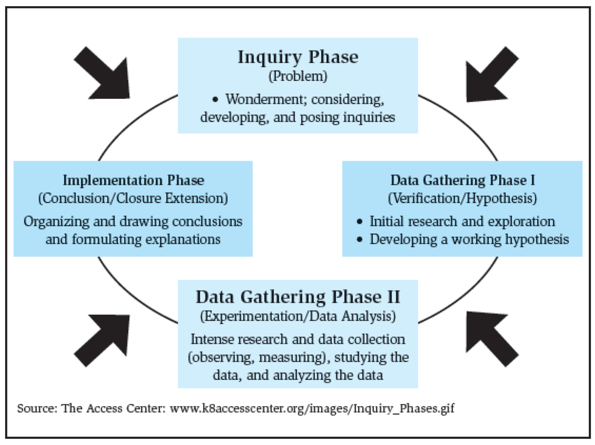

Science Everywhere!
Based off requirements from May, 2018.
This module is designed to help the Scout explore how science affects their life each day. Science helps people understand how the world around them works.
1.
Choose A or B or C and complete ALL the requirements.
A.
Watch an episode or episodes (about one hour total) of a show about anything related to science. Then do the following:
(1)
Make a list of at least two questions or ideas from what you watched.
(2)
Discuss two of the questions or ideas with your counselor.
Some examples include – but are not limited to – shows found on PBS ("NOVA"), Discovery Channel, Science Channel, National Geographic Channel, TED Talks (online videos), and the History Channel. You may choose to watch a live performance or movie at a planetarium or science museum instead of watching a media production. You may watch online productions with your counselor’s approval and under your parent’s supervision.
B.
Read (about one hour total) about anything related to science. Then do the following:
(1)
Make a list of at least two questions or ideas from what you read.
(2)
Discuss two of the questions or ideas with your counselor.
Books on many topics may be found at your local library. Examples of magazines include but are not limited to Odyssey, KIDS DISCOVER, National Geographic Kids, Highlights, and OWL or Owlkids (https://www.owlkids.com/).
C.
Do a combination of reading and watching (about one hour total) about anything related to science. Then do the following:
(1)
Make a list of at least two questions or ideas from what you read and watched.
(2)
Discuss two of the questions or ideas with your counselor.
2.
Complete ONE adventure from the following list for your current rank or complete option A or B. (If you choose an Adventure, choose one you have not already earned.) Discuss with your counselor what kind of science, technology, engineering, and math was used in the adventure or option.
- Wolf Cub Scouts: Collections and Hobbies, Digging in the Past, Germs Alive!, Grow Something
Collections and Hobbies: Collections are based on organizing items in common. "Analysis" of common elements is inherent in scientific method.
Digging in the Past: Paleontology and geology
Germs Alive!: Biology
Grow Something: Biology and living things
- Bear Cub Scouts: A Bear Goes Fishing, Bear Picnic, Critter Care
A Bear Goes Fishing: Ecology and biology
Bear Picnic: Nutrition and biology
Critter Care: Understanding how to care for a critter helps a Scout learn about the biological needs of the pet.
- Webelos Scouts: Earth Rocks!, Maestro!
Earth Rocks!: Geology
Maestro!: Science and music connect through sound waves and materials chosen to create musical instruments. Additionally, music is closely connected to math.
Option A: Complete all of the following:
(a)
Explain the scientific method to your adult partner.
(b)
Use the scientific method in a simple science project. Explain the results to an adult.
(c)
Talk to a scientist about why he or she became a scientist.
Option B: Complete all of the following:
(a)
Show how to orient a map. Find three landmarks on the map.
(b)
Make a simple compass with a magnet and pin.
(c)
Show how a compass works.
(d)
Use a compass on an orienteering activity with at least 3 stops.
3.
Act like a scientist! Explore EACH of the following:
A.
With your counselor, choose a question you would like to investigate. Here are some examples only (you may get other ideas from your adventure activities):
(1)
Why do rockets have fins? Is there any connection between the feathers on arrows and fins on rockets?
Arrow feathers and rocket fins serve the same purpose – they provide aerodynamic stability during flight through the atmosphere.
(2)
Why do some cars have spoilers? How do spoilers work?
In theory, spoilers on cars use Bernoulli’s principle in the opposite way that an airplane does. An airplane wing is designed for the air to flow faster over the top of it than under it; this is how it creates lift. A spoiler on a car is designed to force the air to move more quickly under the spoiler than over the spoiler; this pushes the car down to give the wheels more traction and increased stability. The faster the car goes, the faster the air moves under the spoiler and the more anti-lift is generated, which provides more stability.
Without a spoiler, the only way to increase stability would be to increase the weight of the car. However, increasing the weight of the car increases its inertia, causing problems at corners and turns. Designers of spoilers have to balance the anti-lift with the drag created by using a spoiler.
You may find the following page at PhysLink.com helpful: https://www.physlink.com/education/askexperts/ae496.cfm.
(3)
If there is a creek or stream in your neighborhood, where does it go? Does your stream flow to the Atlantic or the Pacific Ocean?
With your parent’s or guardian’s permission and assistance, you may want to use an online mapping application to follow the streams and rivers to the ocean. Keep track of the names of the streams, lakes, and rivers connecting your stream to the ocean. Is it possible for you to find out the name of your watershed? "Paddle-to-the-Sea" by Holling C. Holling is a fun book on this topic.
(4)
Is the creek or stream in your neighborhood or park polluted?
You can do a stream sample to find out what kinds of things are living in the water and under the rocks. Some things can survive in polluted water; others can live only in clean water. You can discover if a stream is polluted by finding out what lives there.
Many states have stream studies based on macroinvertebrate identification and populations. Some states use data collected by volunteers for incorporation into stream quality reports. With permission from his parent or guardian, have your Scout check the Internet or with your state’s natural resources department for more information.
Helpful Link: "About Macroinvertibrates" from "Volunteer Stream Monitoring: A Methods Manual" by U.S. Environmental Protection Agency (available on KrisWeb) https://www.krisweb.com/aqualife/insect.htm
(5)
What other activity can you think of that involves some kind of scientific questions or investigation?
B.
With your counselor, use the scientific method/process to investigate your question. Keep records of your question, the information you found, how you investigated, and what you found out about your question.
Scientific Method
- Problem or question: What are you trying to find out?
- Information and/or research: What do you already know about the problem? What have others done about the problem or question?
- Hypothesis: What do you think is the answer to your question?
- Procedure or experimental setup: How will you find the answer to your question and test your hypothesis?
- Data and analysis: What did you find out by doing your experiment? This includes charts, graphs, and any results.
- Conclusion: What did you find to be the answer to your question? If you did not find the answer, why not? How could you find out or expand on the answer(s) you discovered?
Communicate your findings.

C.
Discuss your investigation and findings with your counselor.
4.
Visit a place where science is being done, used, or explained, such as one of the following: zoo, aquarium, water treatment plant, observatory, science museum, weather station, fish hatchery, or any other location where science is being done, used, or explained.
A.
During your visit, talk to someone in charge about science.
B.
Discuss with your counselor the science done, used, or explained at the place you visited.
5.
Discuss with your counselor how science affects your everyday life.